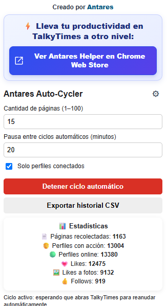

Gracias por acompañarnos
¡Hasta pronto!
Sentimos que hayas desinstalado Antares Helper. Gracias por habernos dado una oportunidad. Seguiremos mejorando nuestras herramientas.
Antares Auto-Cycler — Gestión automatizada de ciclos en TalkyTimes
Explorar Antares Auto-Cycler
Ciclos configurables en TalkyTimes con likes a perfiles y fotos, follows, estadísticas, pausas y reanudación al abrir Chrome.
Antares Auto-Cycler permite configurar y administrar ciclos de navegación e interacción en TalkyTimes desde una interfaz sencilla.
Funciones principales
- Búsqueda y recopilación de perfiles mediante ciclos configurables.
- Opciones de likes, likes en fotografías y follows.
- Filtro para trabajar únicamente con perfiles conectados.
- Configuración de páginas, intervalos de pausa y velocidad.
- Configuración de perfiles en simultáneo y velocidad de interacción.
- Estadísticas de perfiles encontrados y acciones realizadas.
- Exportación del historial en formato CSV.
- Conservación de los últimos ajustes.
- Reanudación de ciclos al volver a abrir Chrome, siempre que no se hayan detenido previamente.
- Controles para iniciar y detener las operaciones.